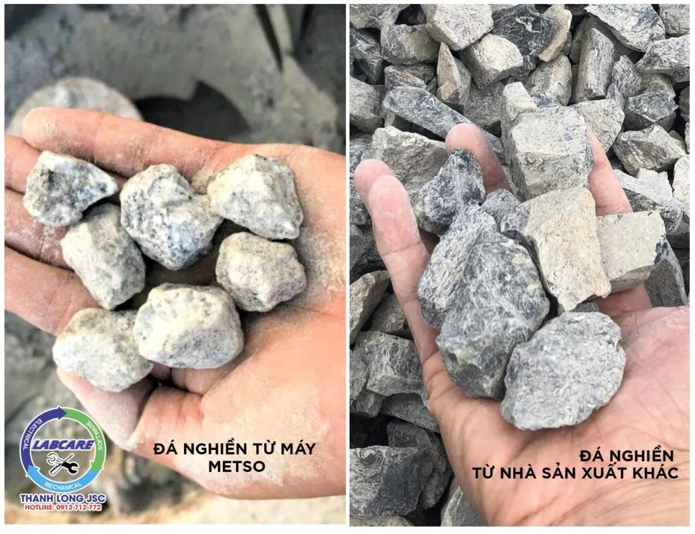
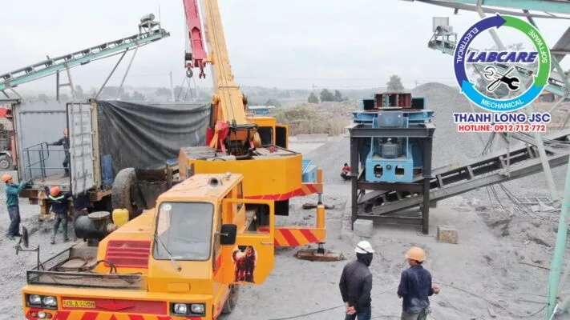

Đá cấp phối là loại đá có nguồn gốc từ đá Granite, bazan, cát kết, … được nghiền ra các hỗn hợp đá mi bụi, đá 0x4, 1×2, 4×6, đá hộc, mi sàng, mi bụi và đá dăm. Kích thước cơ bản từ 0 cm đến 6 cm. Được chia thành nhiều loại để phục vụ từng lợi ích của doanh nghiệp. Vì thế máy nghiền đá Granite có thể ứng dụng vào cấp phối cho các tuyến đường giao thông, cốt nền, lót móng, kè móng, kết hợp hoặc làm phụ gia cho các VLXD khác.
Cấu tạo Máy nghiền đá Granite thủy lực

Cấu tạo chính là cặp nón côn động và nón côn tĩnh quay bởi trục lệch tâm. Vật liệu nghiền khi được đưa vào máy nghiền côn sẽ chịu một lực ép rất lớn, xoay tròn trên bề mặt nón động và nón tĩnh máy nghiền côn. Máy nghiền côn được sử dụng đối với các loại vật liệu nghiền cứng như đá, quặng sắt, quặng đồng, thạch anh, đá granite.
Các loại đá xây dựng nhờ máy nghiền đá Granite
Đá dăm: Hay còn gọi là đá 0x4 như đã giới thiệu ở trên. Đá dăm chủ yếu dùng để làm đá cấp phối cho nền đường, dùng để dặm và hoặc làm mới nguyên một tuyến lộ. Ngoài ra người ta còn dùng đá 0x4 để san lấp nền móng nhà, xưởng và các công trình khác.
Đá mi bụi: Là phân loại đá có kích thước nhỏ nhất trong các loại đá xây dựng. Thường được sử dụng làm nguyên liệu cho các sản phẩm sau: Bê tông nhựa nóng, Bê tông xi măng cường độ cao, chất lượng cao. Thành phần của cấp phối đá dăm lớp Base, Subbase.
Đá 1×2: Là một sản phẩm của quy trình nghiền đá hộc. Kích thước đá 1×2 nhiều loại 10x28mm là lớn nhất. Còn có các viên đá nhỏ hơn như 10x16mm, 10x20mm…Tùy nhu cầu sử dụng của khách hàng có thể chọn sản phẩm lẫn hoặc sàng lọc theo kích thước chuẩn. Đá 1×2 được dùng để đổ bê tông làm nhà cao tầng, đường băng sân bay, cầu cảng, đường quốc lộ, đặc biệt sử dụng phổ biến tại các nhà máy bê tông tươi hoặc bê tông nhựa nóng, v.v…

Đá mi sàng: Hay còn gọi là đá 3×8, loại đá này là sản phẩm của việc sàng lọc từ các sản phẩm đá khác. Và thường được sử dụng làm chân đế gạch bông, gạch lót sàn, phụ gia cho công nghệ bê tông đúc ống cống và thi công các công trình giao thông và phụ gia cho các loại VLXD khác .v.v…
Đá 4×6: Sản phẩm đá 4×6 được ứng dụng khá nhiều trong các công trình thi công giao thông, làm nguyên liệu cho công nghệ đúc cống, đế gạch bông, gạch lót sàn…Kích thước sản phẩm gạch này từ 40-60mm.
Đá 5×7: Là sản phẩm được dùng trong làm móng nhà xưởng, công trình chịu lực nén cao. Kích thước đá lớn từ 50-70mm.
Đá hộc: Đá hộc có kích thước từ 100-300mm và không đồng nhất. Có thể viên dày, mỏng khác nhau nên khi sử dụng cần phù hợp. Đá hộc hiện nay được dùng nhiều trong thi công xây tường rào.

Các tiêu chuẩn đá cấp phối cho Cao tốc Bắc – Nam, máy nghiền đá granite đáp ứng đủ tiêu chuẩn TCVN 8859 : 2011. Mời các bạn xem ở bài viết này nhé. Click vào đây
Khác biệt của máy nghiền đá Granite thủy lực
- Lực nghiền cao nhất trong tất cả các máy nghiền côn hiện nay
- Tính khả dụng và thiết kế mạnh mẽ
- Tiêu thụ điện năng thấp hơn tới 20% so với các máy nghiền côn khác
- Bảo trì nhanh chóng và dễ dàng

Thanh Long JSC là nhà cung cấp thiết bị nghiền số 1 thế giới, với hơn 150 năm đi đầu trong lĩnh vực công nghệ nghiền sàng đá, các trạm nghiền được các chủ đầu tư lựa chọn và tin tưởng bởi các yếu tố sau:
- Tiết kiệm điện từ 4000đ/ 1 khối đá đầu ra.
- Vật tư tiêu hao bền hơn 2 lần so với các nhà sản xuất khác, và luôn có sẵn tại kho.
- Hoạt động bền bỉ không dừng máy, chi phí sản xuất thấp
- Hệ thống báo hiệu cảnh báo áp suất, nhiệt độ, khe xả trên màn hiển thị.
- Hệ thống chống kẹt đá, phát hiện kim loại, chống quá tải được tích hợp.
- Đội ngũ kỹ sư tay nghề cao, nhiều kinh nghiệm, đã được đào tạo theo tiêu chuẩn Châu Âu, sẵn sàng xử lý sự cố khi cần.
Thanh Long JSC tại Việt Nam chuyên cung cấp các sản phẩm dịch vụ về khai thác khoáng sản từ 100 tấn/h đến 2000 tấn/h:
- Dây chuyền nghiền cát/đá cố định: Máy kẹp hàm, máy nghiền côn, sàng rung phân loại, máy nghiền cát nhân tạo VSI Barmac, …
- Dây chuyền nghiền cát/đá di động: máy kẹp hàm di động, máy nghiền côn di động, sàng rung phân loại di động, máy nghiền cát nhân tạo VSI Barmac di động,..
- Công nghệ rửa/tách:: Máy rửa cát theo module, sàng rung tách nước, máy tuyển rửa cát, máy tách cát mịn, máy thu hồi cát mịn…
- Vật tư, thiết bị phụ tùng: Dao nghiền, lưới sàng, má kẹp hàm, nón côn, …
Các dự án lớn đã lắp đặt dây chuyền tại Việt Nam:
Khánh thành dây chuyền nghiền cát nhân tạo phục vụ cho bê tông
Cận cảnh máy nghiền đá hoạt động tại mỏ đá Việt Nam
Lắp đặt trạm nghiền đá và cát xây dựng được nhập khẩu hoàn toàn từ Phần Lan.
Khủng khiếp máy nghiền đá xây dựng lớn nhất Việt Nam từ
Toàn cảnh dây chuyền nghiền cát nhân tạo
Kênh video Youtube: Thế giới máy nghiền đá và Thanh Long JSC
Page Facebook: Công Nghệ Máy Nghiền Đá
Website: https://thegioimaynghienda.com https://labcare.com.vn/
Zalo, hotline: 0912 712 772